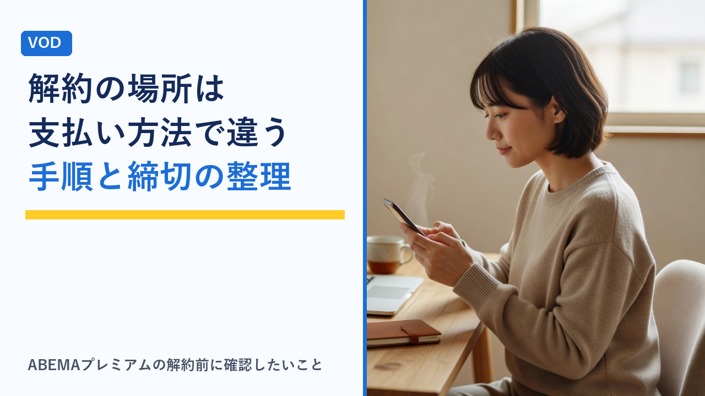

ABEMAプレミアムの解約手順：iPhone・Android・Webなど支払い方法で解約場所が違う点の整理
更新日：2026-11-14

ABEMAプレミアムの解約でつまずきやすいのは、「どこで手続きするか」が人によって違う点です。ABEMAのWebサイトから登録した人と、iPhoneやAndroidのアプリから登録した人とでは、解約の手続きをする場所が変わります。この記事では、ABEMA公式の「サブスクリプションサービスガイドライン」などの表示と、Apple・Google Playの公式サポートページ（いずれも2026年11月14日確認）をもとに、支払い方法ごとの解約場所・締切・解約後の扱いを客観的に整理します。
先に押さえたい3つのルール
ABEMA公式のサブスクリプションサービスガイドラインには、解約について次の内容が定められています。手順より先に、この3点を確認しておくと判断がしやすくなります。
- 解約しない限り自動で更新される：月額プランは、解約手続きをするまで各月の登録日と同じ日に自動更新されます。見ていない月も料金は発生します。
- 手続きは有効期限の24時間前までに：ガイドラインには「解約手続きは有効期限の24時間前までに行う必要があります」と書かれています。更新日の当日では間に合わないことがあります。
- 解約後も有効期限までは見られる・日割りの返金はない：解約後も有効期限まではサービスを利用できます。一方で、期間の途中で解約しても、日割り計算による減額や返金は行われません。
つまり、早めに解約手続きをしても損にはなりにくい仕組みです。「もう続けない」と決めたら、更新日の直前まで待たずに手続きしておくほうが、締切を過ぎるリスクを減らせます。
支払い方法別：解約手続きをする場所
ガイドラインでは、解約は「ご利用されている決済手段に応じて」手続きすると案内されています。登録の経路ごとに、手続きする場所を表にまとめます。
| 登録・支払いの経路 | 解約手続きをする場所 | 確認できる公式情報 |
|---|---|---|
| ABEMAのWebサイトから登録（クレジットカード・キャリア決済など） | ABEMA側のアカウント画面 | ABEMAヘルプの「視聴プラン」 |
| iPhone・iPadのアプリから登録（Appleの支払い） | 端末の「設定」内の「サブスクリプション」 | Appleサポート |
| Androidのアプリから登録（Google Playの支払い） | Google Playの定期購入の管理画面 | Google Playヘルプ |
| Fire TVなど、ほかのアプリストア経由で登録 | そのストア（アカウント）の定期購入の管理画面 | ABEMAヘルプと各ストアのヘルプ |
大事なのは、「今使っている端末」ではなく「登録したときの経路」で場所が決まることです。たとえばiPhoneで登録したあとにAndroidへ機種変更した場合でも、解約はAppleのサブスクリプション側で行うことになります。ABEMA側の画面の具体的な操作は変更されることがあるため、手続きの直前に公式ヘルプの「視聴プラン」の案内を確認してください。
自分の登録経路がわからないときの調べ方
登録からしばらくたつと、どこで申し込んだかを忘れがちです。次の順で確認すると見つけやすくなります。
- 請求の明細を見る：クレジットカードやキャリアの明細で、請求元がABEMAなのか、AppleやGoogleなのかを確認します。請求元がAppleやGoogleになっていれば、ストア経由の登録です。
- 登録時のメールを探す：登録完了のメールや、AppleやGoogle Playからの領収書メールが残っていないかを検索します。
- ストアの定期購入の一覧を開く：iPhoneなら「設定」内の「サブスクリプション」、AndroidならGoogle Playの定期購入の一覧にABEMAが表示されていれば、そこが解約場所です。
- ABEMAのアカウント画面を見る：ABEMAにログインし、現在の視聴プランや支払い方法の表示を確認します。
家族のアカウントで登録していた、というケースもあります。Appleのサポートページでも、サブスクリプションが見つからない場合は家族のアカウントや領収書メールを確認するよう案内されています。
経路別の手順と注意点
ABEMAのWebサイトから登録した場合
クレジットカードやキャリア決済などでWebから登録した場合は、ABEMA側のアカウント画面から解約手続きを行います。ABEMAにログインした状態で、視聴プランに関する画面を開き、解約の項目から画面の案内に沿って進める流れです。途中で画面を閉じると手続きが完了していないことがあるため、「解約が完了した」という表示まで進めることがポイントです。メニューの名前や位置は変わることがあるので、公式ヘルプの「視聴プラン」に載っている最新の手順を見ながら操作してください。
iPhone・iPadのアプリから登録した場合（Appleの支払い）
Appleのサポートページでは、サブスクリプションの解約手順が次のように案内されています。
- 「設定」を開き、自分の名前（ユーザ名）をタップする
- 「サブスクリプション」をタップする
- 一覧から対象のサブスクリプションをタップする
- 「サブスクリプションをキャンセル」をタップする（下にスクロールしないと表示されない場合があります）
同じページには、キャンセルのボタンが表示されない場合や、期限切れのメッセージが赤字で表示される場合は、すでに解約済みという説明があります。端末が手元にないときは、AppleのアカウントのWebページからもサブスクリプションを管理できます。
Androidのアプリから登録した場合（Google Playの支払い）
Google Playヘルプでは、次の手順が案内されています。
- Google Playの定期購入のページ（定期購入の一覧）を開く
- 解約する定期購入を選ぶ
- 「定期購入を解約」をタップする
- 画面上の指示に沿って操作する
Google Playヘルプには、「アプリをアンインストールしても、定期購入は解約されません」という注意書きがあります。また、解約しても支払い済みの期間中は利用できると説明されています。複数のGoogleアカウントを使っている人は、登録したときのアカウントでログインしているかも確認します。
Fire TVなど、ほかの経路で登録した場合
テレビ用の端末のアプリ内で登録した場合は、その端末のアプリストア（アカウント）側で定期購入を管理する形になります。手順はストアごとに異なるため、ABEMAヘルプの「視聴プラン」と、利用しているストアのヘルプを確認してください。テレビでの視聴方法そのものはテレビでVODを見る方法まとめで整理しています。
これでは解約にならない、という操作
解約したつもりで料金が続いてしまう原因は、多くの場合「解約の手続きではない操作」で終えていることです。
| 操作 | 解約になるか | 補足 |
|---|---|---|
| アプリを削除（アンインストール）する | ならない | Google Playヘルプにも、アンインストールでは解約されないと明記されています |
| ログアウトする | ならない | 契約は残ったままで、ログインし直せば利用できる状態です |
| しばらく視聴しない | ならない | 解約手続きをするまで自動更新されます |
| 登録経路と違う場所で探して、見つからないまま終える | ならない | 請求の明細で請求元を確認し、正しい場所で手続きします |
解約の考え方はほかのサービスでも共通です。全体の注意点はVODサービスの解約忘れを防ぐコツと注意点まとめも参考になります。
締切の考え方：「有効期限の24時間前」をカレンダーに入れる
ガイドラインには、料金改定の場面を例に、締切の数え方が示されています。12月31日0時以降に有効期限が来る場合、その24時間前（12月30日0時まで）に解約手続きをしなければ自動更新される、という説明です。日付で考えると、更新日の前日ではなく前々日までに済ませるつもりでいると安全です。
- 次回の更新日を確認する：アカウント画面やストアのサブスクリプション画面に表示されている更新日（有効期限）を控えます。
- 更新日の3日前に予定を入れる：24時間前ぎりぎりではなく、余裕を持った日にカレンダーの通知を設定します。
- 続けないと決めているなら、その日に手続きする：解約後も有効期限までは見られるため、早く手続きしても見られる期間は変わりません。
年末年始などの長い休みに合わせて短期間だけ使う場合の考え方は、VODの年末年始・長期休暇の使い方で整理しています。
手続きのあとに確認しておきたいこと
- 完了の表示を確認する：解約完了の画面やメール、ストアのサブスクリプション画面での表示（更新されない状態になっているか）を確認します。画面を保存しておくと、後から見返せます。
- 有効期限の日付を見る：いつまで見られるかを確認し、見たい作品が残っていれば期限内に視聴します。
- 翌月の明細を確認する：次の請求が発生していないかを、カードやキャリアの明細で確かめます。
- ダウンロードした作品の扱い：ダウンロードはABEMAプレミアムの機能です。有効期限が切れたあとの扱いは公式ヘルプで確認してください。
- 困ったときの問い合わせ先：公式の「特定商取引法に基づく表示」には、問い合わせは順番に対応しており、回答まで5営業日ほどかかると案内されています。更新日が近いときは、問い合わせの返事を待たずに、まず自分で手続きできる場所を確認するほうが確実です。
解約以外の選択肢も比べておく
「料金が気になる」ことが理由なら、完全に解約する以外の選択肢もあります。
| 状況 | 考えられる選択肢 | 確認すること |
|---|---|---|
| 広告は気にならないが、限定作品は見たい | 広告つきABEMAプレミアム（月額680円）への変更 | プラン変更の手順と、変更が反映される時期 |
| しばらく見たい作品がない | いったん解約し、見たい作品が出たら再登録 | 再登録時の料金と、登録の経路 |
| リアルタイム配信だけ見られればよい | 解約して無料の範囲で視聴 | 見たい番組が無料の範囲に含まれるか |
| Disney+とのセットプランを契約している | セットの内容を見直す | 公式の「購入に関する注意事項」と、Disney+側の契約の扱い |
ABEMAプレミアム（月額1,180円）と広告つきプランの違いはABEMAプレミアムと広告つきプランの違いで、複数のサービスをまとめて見直す方法は複数のVODを契約しているときの整理術で整理しています。料金は2026年11月14日時点の公式料金ページの表示です。
選び方のポイント
- まず「どこで登録したか」を特定する：解約場所は登録の経路で決まります。請求の明細で請求元を見るのが早道です。
- 締切は「24時間前」ではなく「前々日まで」で考える：時刻のずれや手続きのやり直しに備えて、余裕を持たせます。
- 続けないなら早めに手続きする：解約後も有効期限までは見られ、日割りの返金はないため、待つ理由がほとんどありません。
- アプリの削除で終わらせない：削除やログアウトは解約ではありません。必ず解約の手続きを完了させます。
- 完了の表示と翌月の明細まで確認する：手続きが終わったかどうかは、画面の表示と請求で確かめます。
- 解約か、プランを下げるかを比べる：見たい作品があるなら、広告つきプランへの変更も選択肢になります。
よくある質問
解約したら、すぐに見られなくなりますか？
ABEMA公式のサブスクリプションサービスガイドラインでは、解約後も有効期限まではサービスを利用できると定められています。そのため、解約の手続きをした時点ですぐに見られなくなるわけではありません。一方で、期間の途中で解約しても日割り計算による減額や返金は行われないため、早めに手続きをしても、支払った期間の分は最後まで利用する形になります。
アプリを削除すれば解約になりますか？
なりません。アプリの削除やログアウトは契約に影響せず、解約手続きをするまで自動で更新されます。Google Playヘルプにも「アプリをアンインストールしても、定期購入は解約されません」と明記されています。登録した経路（ABEMAのWebサイト、Apple、Google Playなど）に合った場所で、解約の手続きを完了させる必要があります。
解約の手続きは、いつまでにすればよいですか？
ガイドラインでは、解約手続きは有効期限の24時間前までに行う必要があるとされています。更新日の当日や直前では間に合わず、次の期間の料金が発生することがあります。更新日をアカウント画面などで確認し、前々日までに済ませる予定を立てておくと安心です。